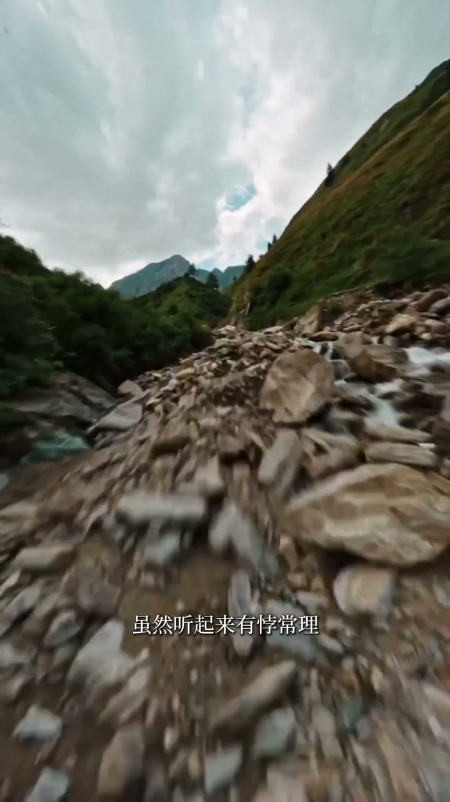
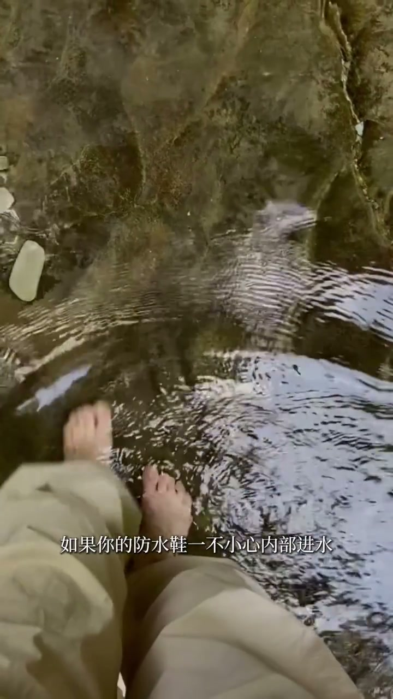

01
中文
防水鞋和不防水鞋两拨人各执一词，互相看对方都像大冤种。
EN
Waterproof and non-waterproof camps clash, each sure the other is wrong.
表达提示opposing camps（对立的阵营）

Scene English · 户外 · 防水徒步鞋
Do You Really Need Waterproof Hiking Shoes?
🎧 语音讲解
Not an Either-Or Question
情境防水和不防水徒步鞋两拨人吵得不可开交，但其实是一道选择题：取决于你去什么地方、做什么。
防水鞋和不防水鞋两拨人各执一词，互相看对方都像大冤种。
Waterproof and non-waterproof camps clash, each sure the other is wrong.
表达提示opposing camps（对立的阵营）
但这并非是一个非此即彼的问题，而是一道选择题。
This isn't either-or—it's a matter of choice.
表达提示either-or（非此即彼）
取决于你去什么地方，取决于你做什么。
It depends on where you go and what you do.
表达提示depends on（取决于）
两者是各有各的好，也是各有各的坑。
Both have strengths, and both have traps.
表达提示each has traps（各有各的坑）
opposing camps（对立的阵营
either-or（非此即彼
For Stream Crossings, Go Non-Waterproof
情境夏天频繁涉水过河，非防水鞋往往是更好的选择：过溪湿了走几步很快就干，防水鞋进水后晾干要慢很多。
夏天涉水过溪，你可能觉得需要防水鞋，但实际上可能适得其反。
Stream crossings in summer sound like a case for waterproof boots—but often the reverse.
表达提示the opposite（适得其反）
对于频繁涉水过河的人来说，非防水鞋往往是更好的选择。
For frequent creek-forders, non-waterproof shoes are usually the better pick.
表达提示creek fording（涉水过河）
过溪湿了也不怕，走几步很快就干了。
Get wet, keep walking, and they dry out in no time.
表达提示dry out fast（很快干）
实验数据表明，湿透后非防水鞋的干燥速度比防水鞋快很多。
Tests show non-waterproof shoes dry far faster once soaked.
表达提示dry faster（干燥更快）
the opposite（适得其反
creek fording（涉水过河

For Cold and Wet, Go Waterproof
情境早春深秋冬天，路面积雪薄冰、没完没了的水坑，防水鞋更好；低温下脚汗没那么严重，保温度比透气更重要。
如果主要是在早春深秋或冬天活动，路面是积雪、薄冰和水坑，防水鞋更好。
For early spring, late autumn, or winter—snow, ice, endless puddles—waterproof wins.
表达提示winter conditions（寒冷环境）
防水膜虽然能挡雨水湿气，但透气性大打折扣。
The membrane blocks rain but badly hurts breathability.
表达提示breathability（透气性）
低温环境下脚汗没那么严重，保住温度比透气更重要。
In the cold you sweat less, so warmth beats breathability.
表达提示warmth beats breathability（保温度优先）
如果你面对的是湿雪、雨加雪的魔法攻击，那必须上防水鞋。
Sleet and rain-snow mixes demand waterproof boots, no question.
表达提示sleet（雨夹雪）
winter conditions（寒冷环境
breathability（透气性

If You Buy Just One Pair
情境如果只想买一双徒步鞋，非防水鞋是更好的选择：覆盖90%的场景，剩下10%用备用袜子或防水袜扛过去。
如果你只想买一双徒步鞋，那非防水鞋可能是更好的选择。
If you'll own one pair, non-waterproof is likely the smarter buy.
表达提示one pair（一双鞋）
因为它能覆盖你90%的场景。
It covers about 90% of your scenarios.
表达提示90% of scenarios（90%的场景）
那剩下的10%呢？用备用袜子或者防水袜就能扛过去。
The other 10%? A spare pair or waterproof socks carry you through.
表达提示waterproof socks（防水袜）
无论选什么鞋，都别忘了带双备用袜子和防水袜。
Whichever you choose, always pack a spare pair and some waterproof socks.
表达提示spare socks（备用袜子）
one pair（一双鞋
90% of scenarios（90%的场景

The Rule of Thumb
情境平凡过溪选非防水，炎热旱脚选非防水，寒冷湿潮不深涉水选防水，雨加雪选防水。
平凡过溪选非防水。
For everyday creek crossings, choose non-waterproof.
表达提示everyday use（日常使用）
炎热旱脚选非防水。
For hot, sweaty days, choose non-waterproof.
表达提示hot and sweaty（炎热汗脚）
还冷湿潮但不深涉水，选防水。
Cold and damp without deep wading? Go waterproof.
表达提示cold and damp（冷湿）
没有一双鞋能让你永远不失脚，但总有一种智慧能让你永远走下去。
No shoe keeps you dry forever—but the right choice keeps you walking.
表达提示keep walking（一直走下去）
everyday use（日常使用
hot and sweaty（炎热汗脚
说选择逻辑
说涉水场景
说冷湿场景
说一双鞋的选择
说袜子策略
涉水选防水会闷水。
防水牺牲透气。
鞋配袜子策略。
炎热旱脚别防水。
备袜兜底。